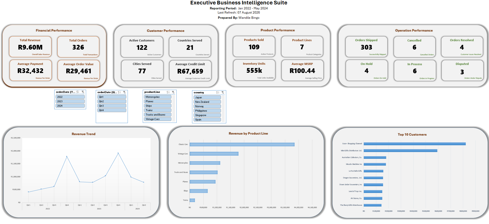

An executive decision-support environment connecting eight operational datasets to provide management with a consolidated view of revenue, customer value, product performance, geographic concentration and order fulfilment.
The solution consolidates fragmented operational records into a navigable management reporting environment. Slicers allow executives to interrogate transactional performance by period, geography and product line while preserving reporting controls where the underlying source data does not support valid historical filtering.

Orders, customers, payments, products and organisational records existed as separate operational datasets. Individually they answered narrow questions, but management lacked a connected view of how the business was performing and what was driving the results.
How is revenue developing over time? Where is demand concentrated? Which products and markets generate the greatest value? How dependent is the business on its largest customers? Where are fulfilment exceptions occurring, and what management actions follow?
Revenue increased from approximately R3.32m in 2022 to R4.52m in 2023 across the two complete reporting years.
Q4 generated approximately R1.78m in 2022 and R1.91m in 2023, identifying a recurring seasonal demand pattern.
Classic Cars generated approximately R3.85m and represented about 40% of total revenue.
The United States generated approximately R3.27m, representing around 34% of total revenue.
The top 10 customers contributed approximately R2.68m, or about 28% of total revenue.
303 of 326 orders were shipped, leaving a focused population of operational exceptions for review.
Use Q3 as a formal preparation window for inventory, supplier capacity, staffing, fulfilment capability, marketing activity and cash-flow planning ahead of recurring Q4 demand.
Protect the strength of the Classic Cars category while building evidence on adjacent categories to reduce concentration risk without sacrificing the strongest commercial franchise.
Protect the economics of the US market while testing selective growth opportunities in Spain, France and other markets with sufficient revenue density.
Introduce structured account ownership, retention monitoring and cross-sell planning for the highest-value customers.
Establish recurring review of cancelled, disputed and on-hold orders with root-cause coding, ownership, ageing and resolution tracking.
Structured Excel tables, data validation, type review and revenue derivation.
Relational model linking orders, customers, products, payments, employees and offices.
Filter-aware measures designed around valid analytical context.
PivotTables, PivotCharts, slicers, KPI cards and trend analysis.
Trend, seasonality, concentration, market, customer and fulfilment analysis.
Material findings translated into implications and prioritised business actions.
The full case study contains the analytical architecture, detailed findings, management implications, reporting controls and technical evidence behind the Executive Business Intelligence Suite.
Open Case Study PDF